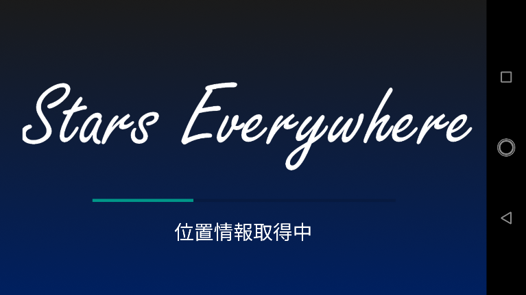
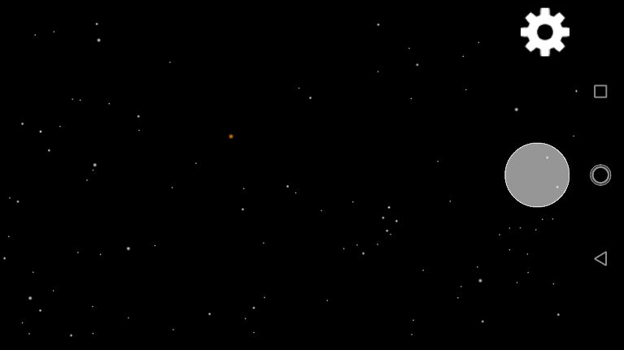
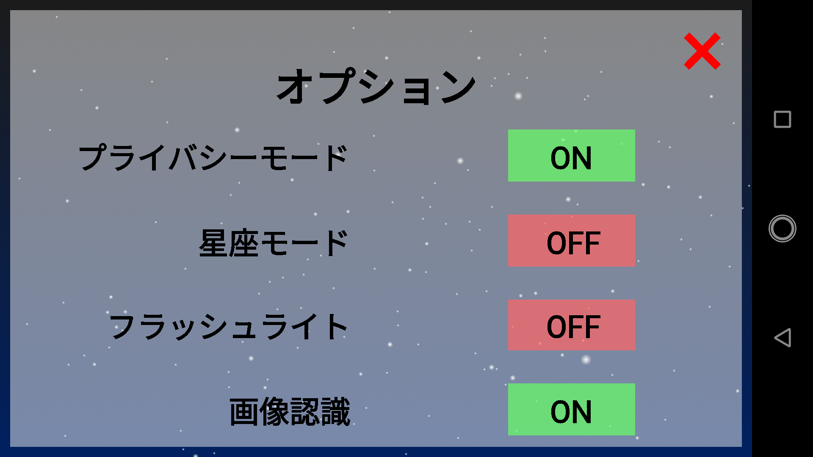
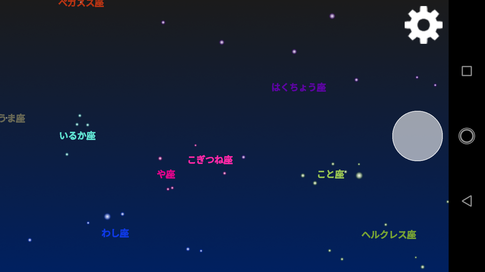
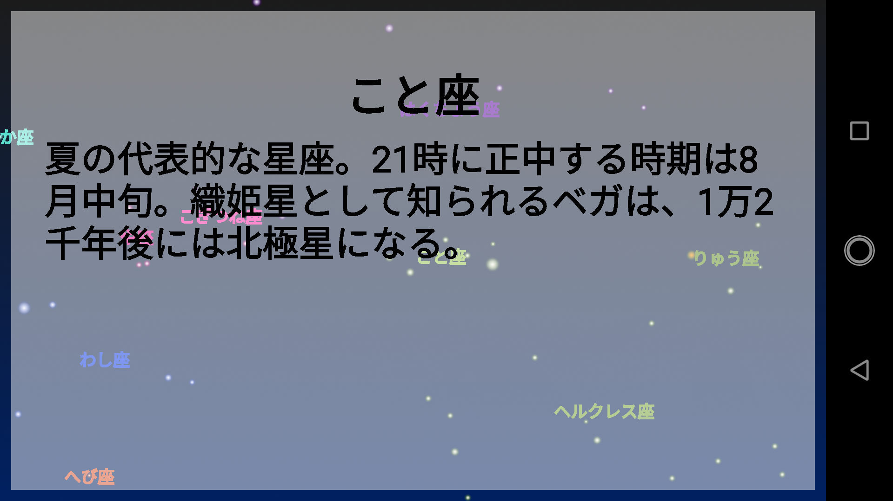
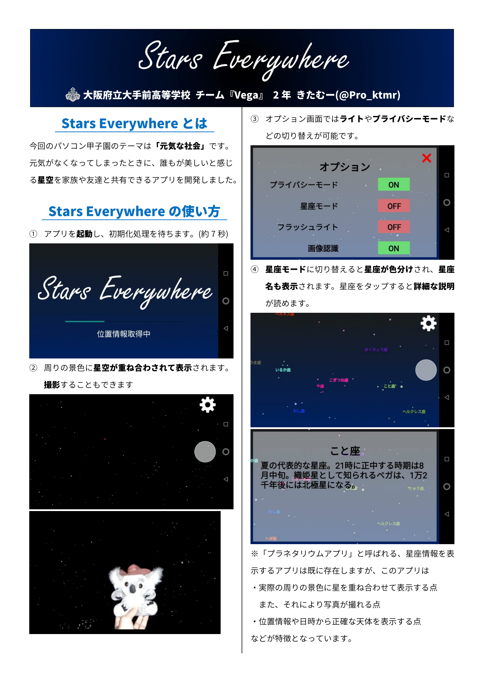
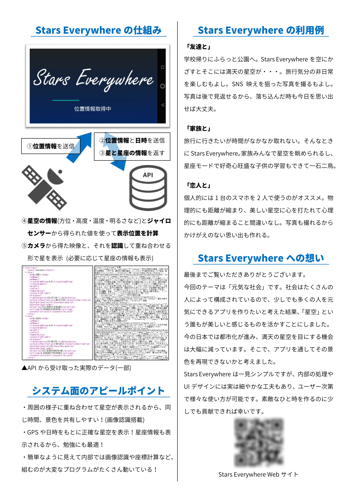

Stars Everywhereは大阪府立大手前高等学校 チーム『Vega』により制作されたアプリです。
パソコン甲子園2018モバイル部門に出場しています。
ベストアイデア賞をいただきました。会場にお越しいただいた皆様、本当にありがとうございました！
アプリの配布について
アプリはパソコン甲子園2018のデモセッションにお越しいただいた方のみに限定配布しております。
デモセッションにお越しになった方は以下のボタンからダウンロードしていただけます。
ダウンロード
なお、アプリインストール後はAndroidの「設定」アプリから必要な権限をすべて与えてください。
アプリ紹介
Stars Everywhereがどのようなアプリなのかご紹介します。
アプリの流れ
1.アプリを起動し、初期化処理を待ちます。

2.周りの景色に星空が重ね合わされて表示されます。撮影することもできます。

3.オプション画面ではライトやプライバシーモードなどの切り替えが可能です。

4.星座モードに切り替えると星座が色分けされ、星座名も表示されます。
星座をタップすると詳細な説明が読めます。
 
アピールポイント
・周囲の様子に重ね合わせて星空が表示されるから、同じ時間、景色を共有しやすい！(画像認識搭載)
※他のプラネタリウムアプリには画像認識機能はついていません。
・GPSや日時をもとに正確な星空を表示！星座情報も表示されるから、勉強にも最適！
・簡単なように見えて内部では画像認識や座標計算など、組むのが大変なプログラムがたくさん動いている！
ポスター
ブースにて展示しているポスターです。

お問い合わせ
本作に関するお問い合わせはTwitter(@Pro_ktmr)またはPro.ktmr★gmail.comまでお願いします。